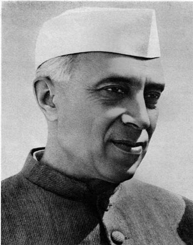

Jawaharlal-Nehru

Jawaharlal Nehru was born on 14 November 1889 in Allahabad in British India. His father, Motilal Nehru (1861–1931), a self-made wealthy barrister who belonged to the Kashmiri Pandit community, served twice as president of the Indian National Congress, in 1919 and 1928.His mother, Swarup Rani Thussu (1868–1938), who came from a well-known Kashmiri Brahmin family settled in Lahore,was Motilal's second wife, his first having died in childbirth. Jawaharlal was the eldest of three children.His elder sister, Vijaya Lakshmi, later became the first female president of the United Nations General Assembly.His youngest sister, Krishna Hutheesing, became a noted writer and authored several books on her brother.
For more Information
click here